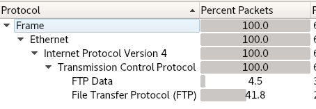

Attacker IP: 10.0.0.22
Target IP: 10.0.0.37
I'm expecting to be trolled by this VM.
PORT STATE SERVICE VERSION
21/tcp open ftp vsftpd 3.0.2
| ftp-anon: Anonymous FTP login allowed (FTP code 230)
|_-rwxrwxrwx 1 1000 0 8068 Aug 10 2014 lol.pcap [NSE: writeable]
| ftp-syst:
| STAT:
| FTP server status:
| Connected to 10.0.0.22
| Logged in as ftp
| TYPE: ASCII
| No session bandwidth limit
| Session timeout in seconds is 600
| Control connection is plain text
| Data connections will be plain text
| At session startup, client count was 5
| vsFTPd 3.0.2 - secure, fast, stable
|_End of status
22/tcp open ssh OpenSSH 6.6.1p1 Ubuntu 2ubuntu2 (Ubuntu Linux; protocol 2.0)
| ssh-hostkey:
| 1024 d6:18:d9:ef:75:d3:1c:29:be:14:b5:2b:18:54:a9:c0 (DSA)
| 2048 ee:8c:64:87:44:39:53:8c:24:fe:9d:39:a9:ad:ea:db (RSA)
| 256 0e:66:e6:50:cf:56:3b:9c:67:8b:5f:56:ca:ae:6b:f4 (ECDSA)
|_ 256 b2:8b:e2:46:5c:ef:fd:dc:72:f7:10:7e:04:5f:25:85 (ED25519)
80/tcp open http Apache httpd 2.4.7 ((Ubuntu))
| http-robots.txt: 1 disallowed entry
|_/secret
|_http-server-header: Apache/2.4.7 (Ubuntu)
|_http-title: Site doesn't have a title (text/html).
MAC Address: 00:0C:29:BE:11:98 (VMware)
Device type: general purpose
Running: Linux 3.X|4.X
OS CPE: cpe:/o:linux:linux_kernel:3 cpe:/o:linux:linux_kernel:4
OS details: Linux 3.2 - 4.9
Network Distance: 1 hop
Service Info: OSs: Unix, Linux; CPE: cpe:/o:linux:linux_kernel
I downloaded lol.pcap to analyze in wireshark.


I started dirb.
---- Scanning URL: http://10.0.0.37/ ----
+ http://10.0.0.37/index.html (CODE:200|SIZE:36)
+ http://10.0.0.37/robots.txt (CODE:200|SIZE:31)
==> DIRECTORY: http://10.0.0.37/secret/
+ http://10.0.0.37/server-status (CODE:403|SIZE:289)
---- Entering directory: http://10.0.0.37/secret/ ----
+ http://10.0.0.37/secret/index.html (CODE:200|SIZE:37)
Nikto:
+ Server: Apache/2.4.7 (Ubuntu)
+ Server leaks inodes via ETags, header found with file /, fields: 0x24 0x500438fe37ded
+ The anti-clickjacking X-Frame-Options header is not present.
+ The X-XSS-Protection header is not defined. This header can hint to the user agent to protect against some forms of XSS
+ The X-Content-Type-Options header is not set. This could allow the user agent to render the content of the site in a different fashion to the MIME type
+ No CGI Directories found (use '-C all' to force check all possible dirs)
+ Entry '/secret/' in robots.txt returned a non-forbidden or redirect HTTP code (200)
+ "robots.txt" contains 1 entry which should be manually viewed.
+ Apache/2.4.7 appears to be outdated (current is at least Apache/2.4.12). Apache 2.0.65 (final release) and 2.2.29 are also current.
+ Allowed HTTP Methods: POST, OPTIONS, GET, HEAD
+ OSVDB-3092: /secret/: This might be interesting...
+ OSVDB-3233: /icons/README: Apache default file found.
The note mentions sup3rs3cr3tdirlol and I assumed it's a directory name which obviously could not be found by dirb.

root@kali:~# file roflmao
roflmao: ELF 32-bit LSB executable, Intel 80386, version 1 (SYSV), dynamically linked, interpreter /lib/ld-linux.so.2, for GNU/Linux 2.6.24, BuildID[sha1]=5e14420eaa59e599c2f508490483d959f3d2cf4f, not stripped
Probably not the safest to just run binaries like this, especially from a machine named troll.
root@kali:~# ./roflmao
Find address 0x0856BF to proceedroot@kali:~#
I ran the binary using gdb and put a break point on main and tried to go to the address but that was invalid.
I put 0x0856BF in the URL after lol/ and that wasn't it. I put it after 10.0.0.37/ and it worked.

Dirb finds nothing for 0x08... directory


Made a password list:

I started ssh and ftp brute force with the list but nothing.
I also used the list to scan webserver with dirb and nothing.
Time to look at a walkthrough for a hint. The password is filename Pass.txt...


The system is ubuntu 14.04 with kernel Linux troll 3.13.0-32 and it's 32-bit.
I used this exploit to get root: https://www.exploit-db.com/exploits/37292/ Linux Kernel 3.13.0 < 3.19 (Ubuntu 12.04/14.04/14.10/15.04) - 'overlayfs' Local Privilege Escalation


After looking at other walkthroughs, I could have gotten root through cron job as well.